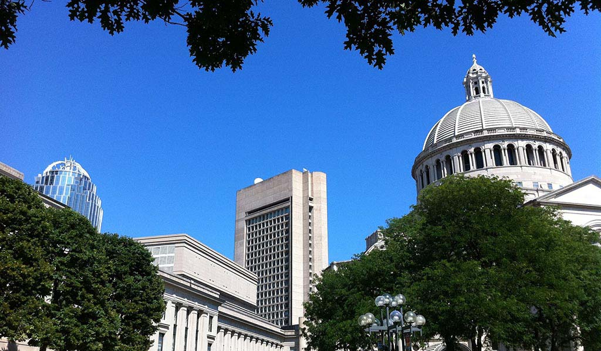
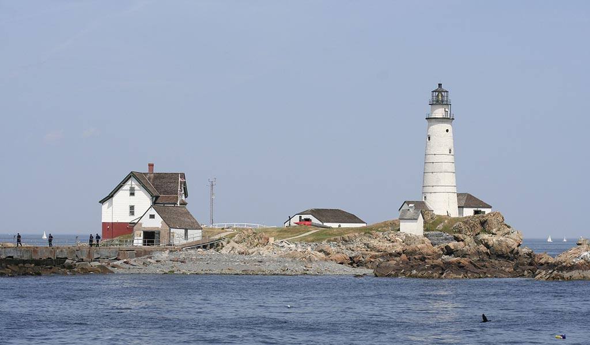

Three universities with a major presence in the city, Harvard, MIT, and Tufts, are just outside of Boston in the cities of Cambridge and Somerville, known as the Brainpower Triangle.
Columbia Point is the location of the University of Massachusetts Boston, the Edward M. Kennedy Institute for the United States Senate, and the John F. Kennedy Presidential Library and Museum.

The oldest church in Boston is First Church in Boston, founded in 1630.
In 1852, the Boston Public Library was founded as the first free library in the United States.

Boston Harbor is a natural harbor and estuary of Massachusetts Bay, and is located adjacent to the city of Boston, Massachusetts.